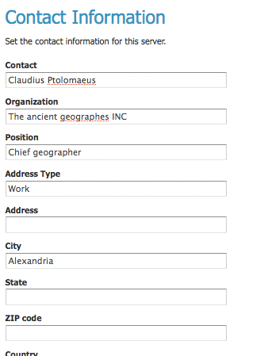

Contact Information¶
The Contact Information is used in the Capabilities document of the WMS server, and is publicly accessible. Please complete this form with the relevant information.

Contact Page
Contact Information Fields¶
| Field | Description |
| Contact | Contact information for webmaster |
| Organization | Name of the organization with which the contact is affiliated |
| Position | Position of the contact within their organization |
| Address Type | Type of address specified, such as postal |
| Address | Actual street address |
| City | City of the address |
| State | State or province of the address |
| Zip code | Postal code for the address |
| Country | Country of the address |
| Telephone | Contact phone number |
| Fax | Contact Fax number |
| Contact email address |
Previous: Status
Next: Global Settings